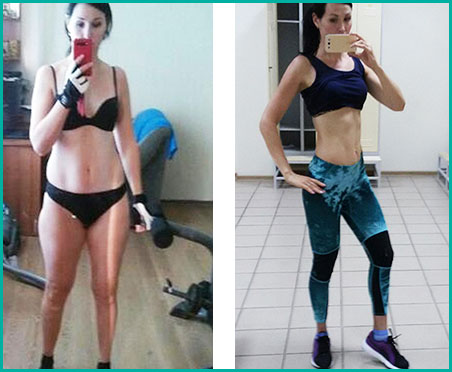
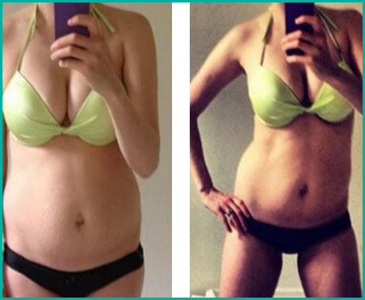
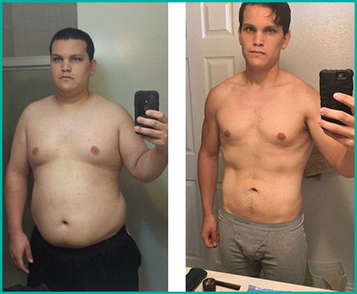
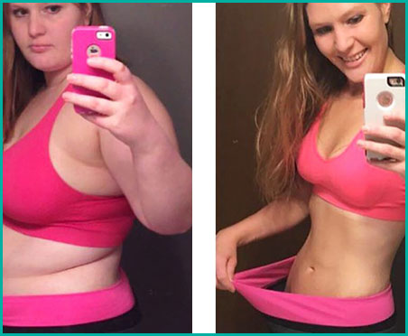
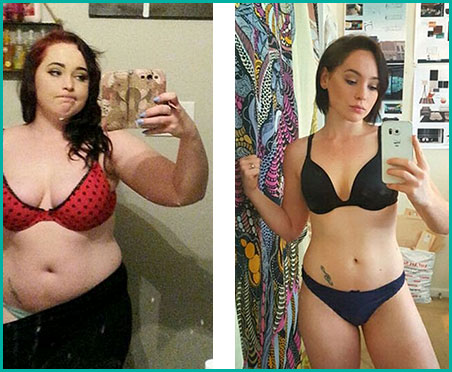

Ангелина Христова, на 21 години
ПРЕДИ КУРСА:
Тегло: 67 кг

РЕЗУЛТАТ СЛЕД КУРС НА УПОТРЕБА НА Keto Slim
Тегло: 52 кг(-15 кг)
Майка ми спазваше кето диета според препоръките на лекаря. И за 3
месеца тя отслабна с 20 кг. Толкова много исках и аз, но не винаги можех да спазвам диетата.
Опитах Keto Slim. И за моя изненада, спрях да ям въглехидрати. Добавката ми помогна да засиля кетозата, а
тялото ми вече само ми даде знаци, от какво се нуждае. Трябваше само да го слушам. За один курс
успях да сваля 15 кг! И не ми беше трудно, не гладувах и не бях уморена. Напротив, чувствах
лекота и прилив на сила. Дори главата ми заппочна да работи по-добре.
Емилия Стефанова, на 43 години
ПРЕДИ КУРСА:
Тегло: 89 кг

РЕЗУЛТАТ СЛЕД КУРС НА УПОТРЕБА НА Keto Slim
Тегло: 62 кг(-27 кг)
Никога не говоря за диетата си, освен ако някой не ме попита (първото
правило на кето). Ако това се случи, хората най-често казват, че такава диета има много ограничения.
Категорично не съм съгласна с това! Знаете ли, какво наистина може да се нарече ограничение? Задух при
качване по стълби, това че не можете да не изоставате от детето си, срам от снимане, избягването на
огледала, ужаса от купуването на нови дрехи... Кето не ограничава – то дава много по-голяма свобода,
отколкото някога съм имала. Освен това е много вкусно) markНо в кетозата е много трудно да влезете
сами. Лично аз не можах. На мен ми помогна Keto Slim Той въведе тялото ми в кетоза, а на мен ми
остана само да поддържам това състояние и това е. Няма нищо по-лесно.
Иван Георгиев, на 30 години
ПРЕДИ КУРСА:
Тегло: 110 кг

РЕЗУЛТАТ СЛЕД КУРС НА УПОТРЕБА НА Keto Slim
Тегло: 74 кг(-36 кг)
Бях щастлив, когато позитивното тяло излезе на мода, но се разстроих,
когато видях резултатите от изследванията си. Трябваше бързо да отслабна. Лекарят веднага ме предупреди,
че това не е толкова лесно, колкото изглежда и ми изписа Keto Slim. Четох, че някои хора с години не могат
да влязат в състояние на кетоза, тъй като е много трудно. Лично аз, с помощта на капсулите, успях от
първия път. Те са създадени точно за това, да помогнат да се стартира кетозата в тялото без излишен стрес.
И с тях се отслабва много удобно, изобщо не се чувстваш гладен. Ядох много, но все пак отслабнах
с 12 кг.
Цветелина Маркова, на 26 години
ПРЕДИ КУРСА:
Тегло: 108 кг

РЕЗУЛТАТ СЛЕД КУРС НА УПОТРЕБА НА Keto Slim
Тегло: 52 кг(-56 кг)
Отслабнах с 56 килограма именно благодарение на Keto
Slim. Сега съм фитнес треньор и знам защо диетите не работят. Хората ходят в залата с години,
но фигурите им не се променят. Грешката им е в избора на правилната диета. Всички те избират
нискокалоричните, след които килограмите се връщат двойно. Това е грешно, защото с КЕТО се отслабва
много по-бързо, по-лесно и килограмите не се връщат.
Христофор Димитров, на 28години
ПРЕДИ КУРСА:
Тегло: 87 кг

РЕЗУЛТАТ СЛЕД КУРС НА УПОТРЕБА НА Keto Slim
Тегло: 62 кг(-25 кг)
Затлъстяването ми е генетично заболяване. Всички в семейството ми са
едри. Цял живот мечтаех да отслабна, но не успях. Нали разбирате каква храна ме чакаше вкъщи. И както се
оказа после, генетиката може да се промени, ако малко промените диетата си. Първоначално беше много трудно
и знаех, че не мога да се справя сама. Затова реших да опитам Keto Slim. Това е
най-хубавото нещо, което ми се е случвало напоследък. За един курс свалих 25 килограма! Промених навиците
си на хранене и сега спазвам кето диета.